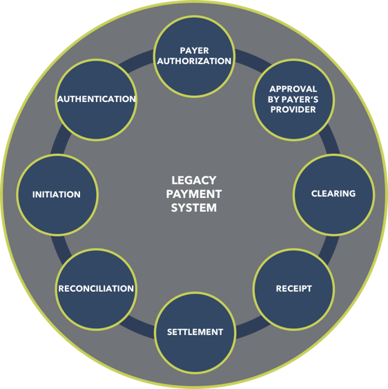
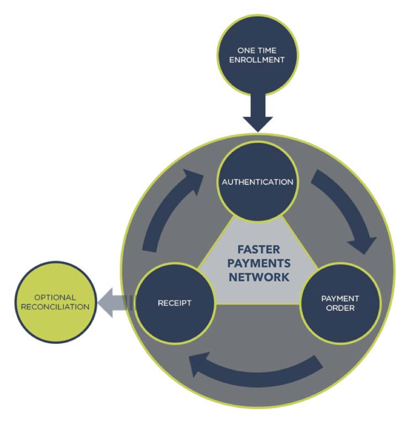

WingCash is a national digital currency platform for the Federal Reserve that extends the US dollar into the digital realm. The WingCash Faster Payments Network (FPN) is an end-to-end solution providing digital fiat currency to improve the U.S. payment system. Using the FPN platform, the Federal Reserve* distributes digital Federal Reserve Notes (i.e. digital coins and bills) to depository institutions. This new digital capability permits the Federal Reserve to continue to perform its core function of managing the money supply, while providing clear public benefits through broad-based, non-discriminatory access to an efficient and effective means of electronic commerce.
The FPN is competitively neutral and cost effective. It will enable the Federal Reserve to continue to ensure the integrity of the payments system.
THE PROPOSAL
The WingCash platform is specifically designed to achieve the public policy goals stated in the Federal Reserve’s Strategies for Improving the U.S. Payment System. The system successfully balances various stakeholder interests while also satisfying stakeholder expectations through a combined public and private ownership structure and the implementation of a proven governance model.
In addition to the roles and responsibilities proposed for the Federal Reserve*, we also propose roles and responsibilities for the Department of the Treasury*. Specifically, the proposal calls for the extension of the the FedCash Service to include authorized issuance of digital bills and coins (Fed notes) with a complementary and tightly integrated Global Directory Service (GDS).
HOW IT WORKS
The WingCash platform design is different from the design of accounting systems like depository institutions use to manage customer balances. Rather, the platform utilizes a system of addresses (URLs) that allow individuals and businesses to safely and securely transfer value.
The WingCash Faster Payments Network (FPN) has distinct parts. The first part allows the United States Department of the Treasury to design and issue digital Fed notes. The second part operated by the Federal Reserve and/or a Governing Organization is a global directory service that publishes to the public, distributes to depository institutions and records the transfer of Fed notes.
The WingCash FPN reduces the societal costs of payments and improves payment efficiency by reducing the number of steps associated with current payments processes from eight to three.
|  |  | |
| The legacy payment system is constrained by an eight step process. | The new FPN payment system simplifies the payment process down to 3 steps: authentication, payment order, and receipt. |
The FPN’s design allows depository institutions to continue their current roles and responsibilities of ordering Fed notes from the Federal Reserve, distributing Fed notes to their customers, and acting as depository institutions for Fed notes for their consumer and business customers. Depository institutions can also use an Application Programming Interface (API) to provide value added services to their customers such as currency conversion, cross border payments, or enabling digital currency use in a popular mobile application. Consumers and businesses hold and transfer possession of Fed notes to make payments using any type of supported communication device (i.e. mobile phone, tablet, personal computer) or no device at all, using a payment code.
FREQUENTLY ASKED QUESTIONS
Involvement by the Federal Reserve
Digital banknotes should be treated as authorized by the Federal Reserve Act to the same extent as physical banknotes. Section 16(1) of the Federal Reserve Act is silent as to the medium in which Federal Reserve notes are to be issued. Accordingly, it may be argued that digital banknotes are encompassed within the general authority of Paragraph 1. Digital Fed notes would not replace physical bills and coins but would be an additional service offered by the Fed.
The people want a financial system that serves their purposes and protects their interests. If the FPN provides an additional option for payments that is easy to use, secure, cost-effective, and accepted by the establishments that consumers do business with, they are likely to accept it without a lot of consideration for the mechanics that make the system possible.
We are assured that not all consumers or businesses would like to have the Fed provide digital bills and coins for the FPN; however, consumers and businesses are best served by a safe, efficient, trusted payment ecoystem. The Fed’s role in the FPN would bring the highest levels of public confidence to the FPN.
The Proposer cannot speak on behalf of the Federal Reserve; however, the Fed's operation of the FPN would provide the highest level of credibility and trust in the FPN.
One of the strengths of the proposed FPN is its flexibility with respect to the role of depository financial institutions in the chain of distribution of digital banknotes. For example, the Fed could engage depository institutions to act as intermediaries with respect to the distribution of digital banknotes, similar to their role with respect to the distribution of paper Federal Reserve notes.
Administration of the Global Directory Service, the “back-office” machinery necessary for authentication and recording, and numerous other aspects of the Faster Payments Network, may be delegated to the Governing Organization or a service provider as the Fed sees fit. The proposer’s intent is not to dictate whether or how the Fed may exercise its discretion to delegate operation of the various components of the FPN; rather, where the FPN contemplates operative concepts from the point of view of Fed action, it should be understood to refer to action by the Fed or its designee, and not to derogate from the Fed’s flexibility to delegate or otherwise involve the Governing Organization, its members, or other third parties as necessary or appropriate to provide the FPN.
The multi-issuer design of the FPN makes it possible for a commercial bank to act as distributor of the Fed notes held against a balance in an ominibus account; however, our experience suggests that commercial banks resist this role and responsibility for many reasons. In the model with one or more commercial banks as providers of the notes, the Fed would not need to act as the issuer or redeemer.
Financial Viability
The Federal Reserve can expect to receive full recovery of costs over the long run by directing savings from reduced printing, transportation and destructions costs of physical bank note issuance into the operation of the FPN. However, the implementation of the FPN would require an investment by the Federal Reserve.
The Federal Reserve will continue to recognize seigniorage for Fed notes issued to the FPN. We also propose other possible revenue streams associated with the FPN, although we do not prescribe who will record the revenue, as follows: distribution of brand cash, co-branding of Fed notes, deposit fees, education and training, membership, and more.
Yes, we expect stakeholders of other payment systems to be slow to or resist adoption of the FPN because of the potential loss of revenue as payments shift from existing payment systems to the FPN. However, financial institutions will be able to realize additional revenue by determining the fee charged to the customer for depositing Fed notes to an account. Depository institutions using the API with their own branded applications are able to offer the baseline services and value-added services for their customers. Value-added services may generate revenue for depository institutions.
No, unlike payment card networks, the proposed design and rules of the FPN do not have financial institutions responsible for chargebacks. Financial institutions will benefit from reduced risk of payments that use the FPN because there is no inter-provider credit or liquidity risk when accepting Fed notes for deposit.
Business Model
The FPN is designed as a bearer instrument payment network. The FPN is not a system of accounts that use double-entry accounting (e.g., debits and credits) to move value between accounts. Consequently, the FPN does not compete with depository financial institutions for deposit accounts of consumers or businesses.
The FPN will create and store data for each Fed note on the FPN. While this may seem like a lot of data, even with billions of Fed notes, it is rather small by comparison to some existing web sites. For example, YouTube reports that “every day people watch hundreds of millions of hours on YouTube and generate billions of views.” Serving hundreds of millions of hours of YouTube video places a high demand on computing resources (i.e., computer processing power, network bandwidth, and storage), whereas the FPN’s serving static/dynamic web pages demands significantly less computing resources.
The FPN can scale quickly while maintaining service level agreements and providing the baseline core features because of an original design architecture that supports high scalability.
The proposers have tested the transaction throughput of the current version without much code optimization using Amazon EC2 Type C3 instances with 32 cores and 60 GB of memory. The current version was able to achieve projected annual transaction throughput rate in excess of 23 billion transfers per year (750 transactions per second, 64.8 million transactions per day). To put this in perspective, VocaLink, the operator of the UK’s Faster Payments system, indicates on their website that their data centers process just over 6 billion BACS transactions annually (16.44 million per day), with a peak reaching 100 million transactions per day (36.5 billion transactions annually). The proposers believe that, with both hardware and software optimizations, the transaction throughput of the FPN at implementation can be improved to reach or exceed 220+ billion transfers per year, or 602.7 million transfers per day. The FPN’s architecture is designed to accommodate growth with additional code optimization and through horizontal scale.
The FPN includes the following measures to mitigate the impact of external network attacks:
- Because attackers often try to connect to database servers directly through network ports, the FPN employs external firewalls that reject all attempts to connect to non-public ports.
- The FPN mitigates denial of service (DoS) attacks by providing flexible server capacity and by adjusting firewall rules in real time to temporarily block specific abusive IP addresses.
- The FPN serves static copies of web pages in the event of an extreme DoS attack. Because copies of static web pages require few server resources, it is more difficult for attackers to overwhelm servers that serve static copies of web pages.
- The proposers recommend the creation of a site reliability engineering (SRE) team to monitor the network and build automated detection and response systems.
The FPN operates the same for government agencies as with public/private businesses; however, the API allows a degree of freedom to a business or government agency to customize the features or experience of the FPN. Government and charitable organizations that distribute humanitarian aid would have the option to distribute a closed-loop payment instrument (Brand Cash) redeemable only at certain locations to provide better control of where humanitarian aid is redeemed and for what products and or services.
The FPN’s domain aliasing capability allows FPN features to be aliased to the web domain of a financial institution. For example, a financial insitution with a domain of www.firstfinancialinstitution.com could be set up to provide its customers customized, branded acess and user experience to the FPN at fpn.firstfinancialinstitution.com.
While it would be convenient, it is not to the consumers’ benefit to be auto-enrolled in the FPN through their financial institutions. The FPN enrollment process enables participants in the system to specify their credentials and keep them private. Enrollment that is not linked to a financial institution also expands access to the solution to unbanked individuals. For convenience, the FPN allows those who have accounts with depository financial institutions to link their payment addresses to their accounts.
Transactions within the FPN are immediate and are performed with good funds (i.e. central bank money) that are currently held by the payer’s primary payment address. The purpose of the FPN is to execute transfers in real-time, all day, every day without human intervention and provide confirmation of the completed transfer to both the payer and the payee.
A user on the FPN can link an account at a financial institution to her primary payment address and submit a payment order to transfer Fed notes to that account. Users can purchase goods and services with funds held by their primary payment address. Fed notes on the FPN are also fungible with physical bills and coins.
The FPN displays contextual data to inform users. The FPN records, retains, protects, discloses, and makes available to the payer, payee, and issuer appropriate contextual data as permitted by the rules. Contextual data may include but is not limited to the following:
- Transfer identification (each transfer is assigned a system- wide, unique ID)
- Transfer type (transfer types as defined by the system)
- Date and time the transfer was started
- Date and time the transfer was completed or ended
- Status of the transfer
- Amount of the transfer
- Visibility of the transfer (i.e., public or private)
- Appropriate details about each participant or stakeholder involved in the transfer
- Fed notes involved in the transfer by unique identifier
- Closed-loop notes involved in the transfer, including the type of the note (e.g., gift, loyalty, rewards, promotional), the name the notes Issuer, the denomination, and the date of issuance
The FPN may also capture and record contextual data that include channel- and device-specific information. For example, data may include device operating system, device hardware identifiers, device application identifiers, or device location information.
Contextual information associated with a transfer can be viewed by a stakeholder of the transfer to perform all types of responsibilities including updating double-entry accounting systems, preparing reports, preparing tax statements, auditing, and investigating errors.
The FPN enables flexibility in contextual data and integration of data and messaging with external systems.
The Fed notes held by a person or business would be subject to all laws, regulations, and court orders, just as any other financial asset in the case of a personal or personal bankruptcy.
Governance
The same organizations that write regulations and laws for payment systems that exist today would have the ability to impact the FPN’s rules. These organizations include the CFPB, Federal Reserve Board of Governors, Office of Comptroller of Currency, etc. Furthermore, the solution proposes an inclusive Governing Organization with broad participation from all stakeholders on the FPN to also have rule-making influence.
The Fed would bear the responsibility for compliance with regulations in the ongoing operation of the FPN with established users. As the owner and operator of the FPN, the Fed could designate certain responsibilities to be performed by the Governing Organization. Compliance with BSA/AML/KYC may be delegated by the Fed to the Governing Organization.
Financial institutions that are issued digital Fed notes from the Federal Reserve would be authorized to redistribute the digital banknotes to customers who have satisfied anti-money laundering (AML) and Office of Foreign Assets Control (OFAC) screens. Moreover, the recipients of those digital banknotes would be able to transfer them only to persons (individuals and entities) whose identity had been validated in accordance with applicable AML and OFAC standards by banks authorized by the Fed for that purpose.
With strong front-end identity verification requirements, the FPN would enable AML-related controls far exceeding those currently in place for cash transactions. In addition, the FPN architecture supports a multi-tiered approach to the user base, with holders who have not undergone bank identity verification subject to hard- wired transactional limits (e.g., based on the number or dollar value of transactions during a specified period), while holders who have undergone screening may be subject to less stringent limits, or, if the digital banknotes held by such users are linked to an account, no limits other than restrictions applicable to those of any other holder of a bank account (e.g., standard OFAC blocks and suspicious activity reporting). Such a multi-tiered approach would both preserve widespread access to digital banknotes, and allow financial institutions to maintain their gatekeeper role for transactions at levels designated by the Fed.
Time Frame to Achieve Widespread Adoption
Although there is a version of the FPN operating in the market, if adopted by the Federal Reserve, the proposer recommends replacing open source components with commercial applications. The proposer estimates that the process of replacing open source components with commercial applications and preparing the FPN to operate at scale may take between 9 to 18 months. This period of technical preparation will allow time for the Governing Organization to ratify the rules for the FPN, and large merchants will have the necessary lead time to prepare their systems for acceptance of FPN payments and distribution of Brand Cash.
The solution proposal includes a timeline to achieve widespread adoption that is based on the work streams of the Task Force, which have undergone some modifications during the solution proposal process. It is a high-level timeline. Upon adoption of the solution, a detailed timeline would be developed with input from stakeholders. The detailed timeline would include milestones for governance, legal and regulatory requirements, design, implementation, and adoption by governmental and private key players, including the Fed’s issuing of digital Fed notes, merchants’ implementing the solution, and consumers’ being able to use it for payments.
The technology to support the FPN has been in development since January of 2009 and operating in local markets since 2011. The current version is interoperable with existing payment systems, including the ACH network, the payment card networks, the bill pay networks, and other payment networks.
The following features have already been implemented in the current version of the payment platform:
- Enrollment for persons in the U.S. and other countries as permitted by the rules
- Enrollment for businesses in the U.S. including federal, state and local governments, retailers, etc., and for businesses in other countries as permitted by the rules
- Enrollment for depository institutions in the U.S. and in other countries as permitted by the rules
- Enrollment and support for national currency issuance by central banks in other countries as permitted by the rules
- ACH network integration and support for transfer of funds to accounts held at depository institutions
- Support for businesses and governments to issue closed-loop value (e.g., gift, loyalty, rewards, promotional, humanitarian, and welfare programs) with offers and campaign tracking (Businesses administer their own closed-loop networks with appropriate distribution and redemption agreements for network participants.)
- Support for sharing data using open data sharing formats, including a live web page (e.g., HTML5), Atom, JSON, and streaming
- Open API using OAuth2 for integrators
- Features to support customized branding by depository institutions and regulated non-bank providers using domain name aliasing and themes
- Reports, including transfer history, page groups, provider liabilities, distribution and redemption, received, and receivable
- Support for businesses to have payment addresses with public information published in the Global Directory Service
- Automatic sweep to deposit account with a fixed fee per sweep
-
Administrative features include:
- Payment address management
- Enrollment management
- Transfer analysis
In addition to the above features that already have been tested in the current implementation of the platform, the FPN’s design would maintain the business relationships that exist between stakeholders. For example, depository institutions are members of the Federal Reserve System and order Federal bank notes from the Federal Reserve; with the introduction of the FPN, depository institutions will be transferred digital Fed notes electronically rather than receiving printed notes by armored car services. Depository institutions also maintain the relationships they have with their customers (e.g., provide customers with Fed notes when requested and accept Fed notes for deposit). Regulated non-bank providers maintain the relationships they have with their customers (e.g., cash advances, loans, check cashing). Businesses also maintain the relationships they have with their depository institutions and their customers. The FPN is a platform to enable transfers between all parties enrolled without requiring modification of existing relationships between participants.
Fraud Mitigation
The records of ownership of Fed notes can be protected by using a distributed ledger to record a hash of details for a transfer at each step in the work flow and a hash of the completed work flow and final transfer. While the hashed information can be written to a public distributed ledger without disclosing private details about the transfer, permissioned parties are able to store an independent copy of the hashed information and verify it against the transfer details to protect and verify the integrity of the FPN.
The solution protects the personal information for end users, the Fed notes they hold, and transaction details by encrypting data in transit and at rest.
The FPN encrypts data in transit as follows:
- Data in transit between servers and clients is encrypted using Secure Hypertext Transport Protocol (HTTPS) using Transport Layer Security (TLS) consistent with the guidelines published by NIST.
- Data in transit between servers is encrypted using TLS encryption.
- The FPN uses a Virtual Private Network (VPN) to secure the communications for some administrative processes and services.
The FPN encrypts data at rest as follows:
- Certain records at rest in the database are hashed (e.g., passwords) using secure hashing algorithms consistent with guidelines published by NIST.
- All data at rest on hard drives are encrypted using algorithms based on Advanced Encryption Standard (AES), a NIST-adopted standard.
The solution’s risk management framework also protects consumers from fraud in the following ways:
- The FPN uses push payments exclusively instead of allowing the payee to pull from the payer’s payment address.
- The FPN does not share sensitive information (e.g., account numbers, card numbers, personal information, etc.) with the payee.
- In contrast to checks or payment cards, only known individuals with valid payer credentials are authorized to access the payer’s payment address and to sign payment orders.
- The FPN offers the Federal Reserve and the Governing Organization ability to regulate and oversee the function and operation of the system including the ability to analyze the source, destination and amount for all transfers in lieu of identity verification for every individual.
- The FPN supports optional two-factor authentication that when activated assures that the individual authenticating is also in current possession of protected secret information (i.e., token generated from biometric information).
- The FPN’s payment order dialog supports reverifying the presence and possession of the secret information (i.e., token generated from biometric information) before the payer’s signature will be applied to the payment order.
The FPN also employs a username and password or passphrase pair as a method to verify an end user’s identity to satisfy end user expectations. End users can establish multi-factor authentication for enhanced security. Additional means of authentication can include one-time passwords using a secondary communication channel (e.g., sms/text message), one-time passwords using a separate application (e.g., VIP Access from Symantec, Google Authenticator) or a device that displays the one-time password (e.g., Security token or card), hardware key using PKI (e.g., Yubikey) and biometrics using mobile devices. Additionally, the FPN may require an end user to activate multi-factor authentication as required by some business processes and security features (e.g., a business may require all managers to use multi-factor authentication to sign a payment order).
The United States would have liability for Fed notes held by users of the FPN.
The FPN is designed with robust measures to prevent fraud. In addition to incorporating mechanisms to prevent fraud before it occurs, the FPN includes backend, real-time monitoring to spot exceptions that may indicate fraudulent transactions. The GO and those responsible for managing the FPN’s operations will analyze the exceptions data, then determine, develop and implement the correct response for handling exceptions that have been identified. For example, the fraud detection group may discover a common pattern of individuals transferring small amounts among many payment addresses to hide the possession history, then aggregating the value into a single payment address to be spent or deposited into an account at a depository institution. In response to detecting this sort of pattern, the fraud detection group could write and implement processes and procedures to suspend payment addresses that are participating in the detected pattern. Suspended payment addresses could then be evaluated and investigated.
Disputed Payments
As with physical cash payments, payers who use the FPN are liable for erroneous payments. The proposer believes that, while there is some risk to consumers within such a system, the benefits of the FPN (speed and reduced transaction costs) outweigh those risks. A payer must authorize a payment order before Fed notes are transferred to the payee. The FPN requires the payer to present credentials on the system before submitting payment orders, and it clearly communicates that the payment will be immediate and irreversible. A payer is responsible to protect his credentials as carefully as he would protect his wallet if he were using physical cash.
The FPN should be seen as an option for payers to supplement the payment options currently available. The FPN is an appealing alternative for transactions, such as purchasing fuel at a pump, where the payer has no need of additional consumer protections, has no misgivings about making an irreversible payment, and may reap benefits of reduced costs. A payer who has misgivings about irreversible payments may choose other, existing payment systems that have costs associated with these protections built in.
Payers who use the FPN have the same modes of recourse as payers who use physical cash payments. They can work with the payee to arrange a refund. Payees are motivated to maintain their customers’ good will, so it is reasonable to assume that this mechanism for resolving disputes will be satisfactory most of time. Then if the payee is fraudulent or not cooperative, the payer can work through existing systems, such as the court system, to recover losses. While these mechanisms are more onerous than calling a financial institution and demanding a refund of disputed payments, the payer who uses the FPN does not bear the burden of the hidden costs associated with existing systems that shift financial liability for such transactions to financial institutions, which must then recover their costs by charging higher fees to customers.
BENEFITS


INDEPENDENT ASSESSMENT
The FPN was evaluated against the Faster Payments Task Force’s (FPTF) Effectiveness Criteria by the Qualified Independent Assessment Team (QIAT), hired by the Federal Reserve. The graphics below summarize how the solution proposal was rated against the effectiveness criteria.


ACKNOWLEDGEMENTS
Bradley Wilkes is the primary author of the solution proposal. He is the founder and CEO of WingCash. Prior to WingCash, he founded ProPay, which is now a subsidiary of Total Systems Services (NYSE:TSS). He’s been awarded 8 payment related patents by the USPTO. He received an MBA/TM degree from the University of Phoenix and a BS degree from Brigham Young University.
Solution Proposal Authors and Contributors
We gratefully acknowledge the follwing individuals for their contribution to the solution proposal.
- Braxton C. Wardle
- Spencer D. Marks
- Alexis L. Hales
- Andrew D. Callister
- W. Caleb Brigman
- Jacob Christensen
- Michael C. Johnson
- Shane Hathaway
- Benjamin Geva
- Paul Proctor
- Jennifer Taylor
- Kendall Chadwick
- Janet O. Estep
- Colbrin A. (Colby) Wright
- Stephen Wallant
- David E. Teitelbaum
Current Implementation Authors and Contributors
- Shane Hathaway
- Daniel Roper
- Steve Curtis
- Todd Millecam
- Cody Wilson
- B. Bradley Wilkes
Thanks to all those not named here who contributed to the following applications included in our current application stack: PostgreSQL, RabbitMQ, Python, Pyramid, SQLAlchemy, Memcached, Buildout, Twisted, Ionic, and many more open source projects. We are enormously grateful for all the foundational work.

Copyright © 2017 WingCash. All Rights Reserved.
Photo credit:
Marriner S. Eccles Federal Reserve Board Building (Wikipedia).
{kind=link}
* Disclaimer: The solution proposal and references therein belong solely to the author, including the roles and responsibilities for the Federal Reserve and Department of the Treasury and extension of the FedCash service and addition of a Fed Global Directory Service. Neither the Board of Governors of the Federal Reserve System, any employee of the Federal Reserve System, any employee of any of the Federal Reserve Banks, the Department of the Treasury, nor any employee of the Department of the Treasury have in any way committed to provide the services described in the solution proposal.